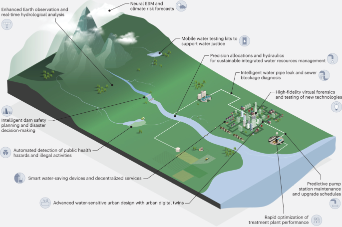

Défis et Perspectives
Défis Actuels
Qualité et disponibilité des données.
Infrastructure nécessaire pour le déploiement à grande échelle.
Cadre réglementaire et éthique.
Perspectives d'Avenir
IA hybride combinant modèles physiques et apprentissage automatique.
Systèmes intégrés de gestion à l'échelle des bassins versants.
Démocratisation des outils d'aide à la décision.
